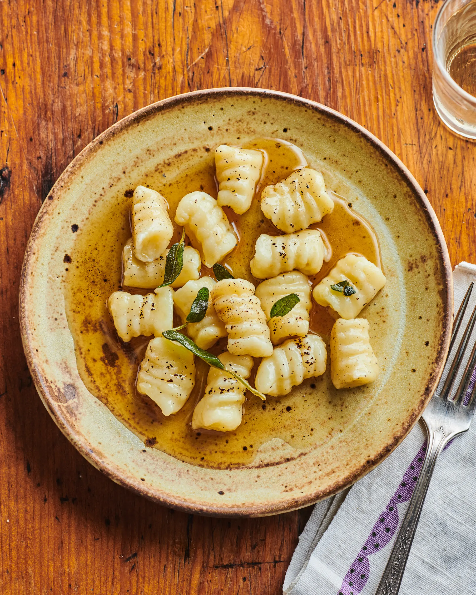
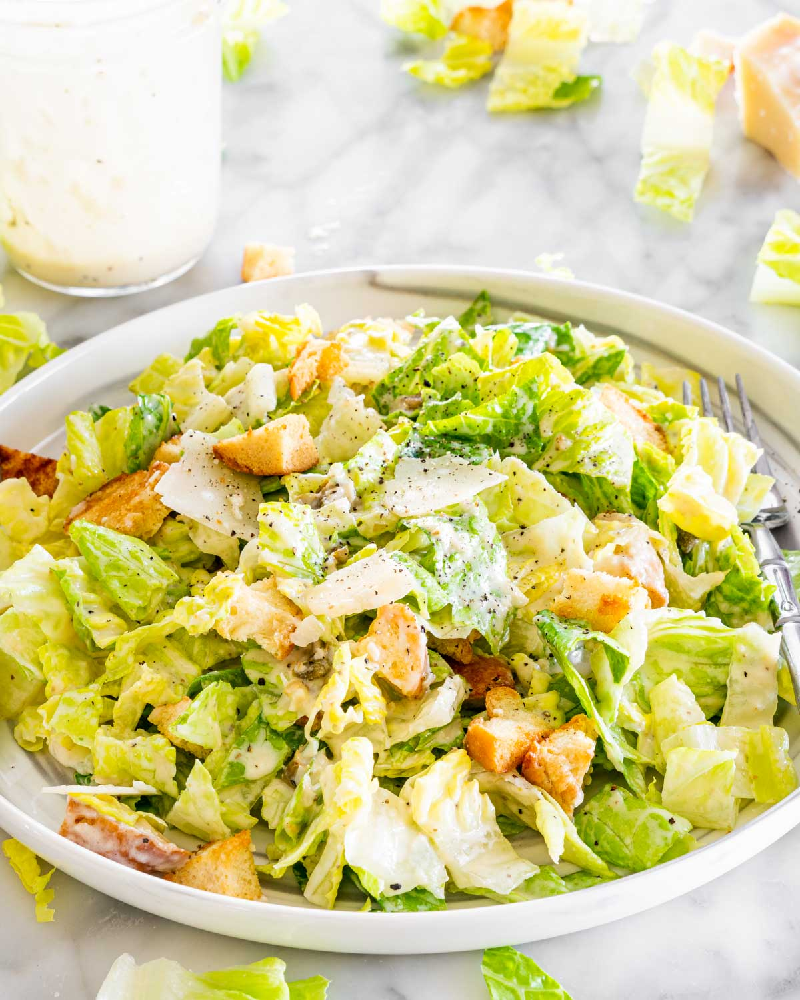

Hearty & Delicious Meals
Explore amazing food recipes.

Stuffed Rigatoni Recipe
Ingredients:
- Water and salt
- Rigatoni
- Olive oil
- Ground beef
- 1 tsp salt
- 1/2 tsp pepper
- 1 tsp oregano
- 1 tsp parsley
- 1/2 onion
- 2 cloves garlic
- 1 cup mozzarella
- 1 cup flour
- 2 eggs
- 1 cup bread crumbs
Steps:
- Boil the rigatoni pasta with water and salt until done, then mix them with some olive oil and let them cool.
- Mix ground beef, salt, oregano, parsley, onion, garlic, and mozzarella together.
- Put the mixture in a freezer bag and squeeze it into the rigatoni.
- Freeze the rigatoni for 30 minutes.
- Coat the rigatoni with flour, eggs, and bread crumbs.
- Fry them with oil until golden brown.
- Enjoy your delicious stuffed rigatoni!

Gnocchi Recipe
Ingredients:
- 3-4 potatoes
- 1 tsp salt
- 1 tsp pepper
- 1 egg
- 1-1 1/2 cups flour
- Butter
Steps:
- Boil the potatoes, peel them, then smash them. Add salt, pepper, and one egg, and mix them.
- Take the dough out of the bowl and add the flour, then knead it until it forms a dough.
- Shape the dough into desired shapes and boil them until they float.
- Fry them with butter, and they're done.

Caesar Salad Recipe
Ingredients:
- 4 tbsp olive oil
- 3 garlic cloves (crushed)
- 1 chicken breast
- 3 tbsp butter
- 1/2 cup mayonnaise
- 1/4 cup parmesan cheese
- French baguette (1 or any other bread)
- 1/2 head iceberg lettuce
- Salt to taste
- 1-2 tsp pepper
- 1/2 tsp oregano
- 1/2 tsp thyme
Steps:
- Heat olive oil and butter in a pan and cook the garlic until fragrant.
- Add the chicken breast and cook until fully cooked, then set aside and slice.
- Toast the French baguette (or any bread) in the pan, then cut it into crouton-sized pieces.
- Mix the mayonnaise, parmesan cheese, oregano, thyme, salt, and pepper in a bowl to make the dressing.
- Tear the iceberg lettuce into bite-sized pieces and place it in a bowl.
- Add the chicken, croutons, and dressing to the lettuce, and toss everything together.
- Enjoy your Caesar salad!

Garlic Parmesan Potato Wedges
Ingredients:
- 4 large potatoes
- 3 tbsp olive oil
- 3 cloves garlic, minced
- 1/2 cup grated parmesan cheese
- Salt and pepper to taste
- 1 tsp dried oregano
- 1 tsp garlic powder
Steps:
- Preheat the oven to 200°C (400°F) and line a baking sheet with parchment paper.
- Cut the potatoes into wedges and toss them in olive oil, minced garlic, parmesan, oregano, garlic powder, salt, and pepper.
- Arrange the wedges on the baking sheet in a single layer and bake for 30-40 minutes, flipping halfway through, until golden and crispy.
- Serve hot and enjoy!

Mandazi Recipe
Ingredients:
- 2 cups all-purpose flour
- 1/4 cup sugar
- 1 tsp baking powder
- 1/4 tsp salt
- 1/2 tsp ground cardamom
- 1/2 cup coconut milk
- 1/4 cup warm water
- 1 egg
- 2 tbsp butter, melted
- Oil for frying
Steps:
- In a large bowl, mix the flour, sugar, baking powder, salt, and cardamom.
- Add the coconut milk, warm water, egg, and melted butter. Mix until a soft dough forms.
- Knead the dough for 5-7 minutes, then cover and let it rest for 30 minutes.
- Roll out the dough on a lightly floured surface and cut into small triangles or squares.
- Heat oil in a pan or deep fryer to 350°F (175°C) and fry the dough pieces until golden brown and crisp.
- Drain on paper towels and serve hot!